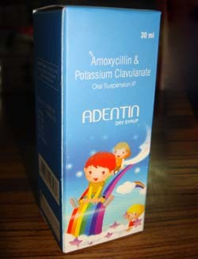

Indications:- Upper and Lower respiratory tract infection, Otitis Media , Acute Sinusitis, Pneumonia.
- 
Amoxicillin Clavulanate Potassium

Amoxycillin Trihydrate + Clavulanate Potassium
DRY SRUP PRESENTATION:
Each 5ml after reconstitution contains:
Amoxycillin Trihydrate IP
Eq to Amoxycillin 200 mg
Clavulanate Potassium USP
Eq to Calvulanic Acid 28.5 mg

Amoxicillin:
It is a semi synthetic penicillin with a broad spectrum bactericidal activity, and has good oral absorption. It acts through the inhibition of biosynthesis of cell wall.
Potassium Clavulanate :
It act as a inhibitor of β-lactamases of Gram +ve and Gram -ve pathogenic bacteria. Has a protective effect on Amoxicillin.
Clavulanic acid when combined with Amoxicillin extends the antibacterial spectrum of Amoxicillin to include organisms resistant to Amoxicillin and other beta-lactam antibiotics, It has been demonstrated by recent studies that Amoxycillin and potassium clavunate shows significantly better symptoms relief with the modest improvement of Upper and lower respiratory tract infections.

Amoxicillin and Potassium clavunate is used in the treatment of a number of infections including.
- Upper and lower respiratory tract infection.
- Otitis Media (inflammation of the middle ear).
- Acute Sinusitis.
- Acute exacerbation of chronic bronchitis.
- Pneumonia.
- Urinary tract infection.

- Penicillin-like antibiotic Amoxicillin works by stopping the growth of bacteria.
- Potassium clavunate works by preventing bacteria from destroying amoxicillin.

Clavulanic acid binds and inhibits beta-lactamases that inactivate amoxicillin resulting in amoxicillin having an expanded spectrum of activity. Amoxicillin inhibits bacterial cell wall synthesis by binding to one or more of the penicillin-binding proteins which in turn inhibits the final transpeptidation step of peptidoglycan synthesis in bacterial cell walls, thus inhibiting cell wall biosynthesis. Bacteria eventually lyse due to ongoing activity of cell wall autolytic enzymes (autolysins and murein hydrolases) while cell wall assembly is arrested.

Side effects of Amoxicillin and Potassium clavulanate is generally minor and well tolerated.
- Diarrhea/loose stools.
- Nausea.
- Vomiting.
- Headache.

Amoxicillin and potassium clavunate is contraindicated in patients with a history of allergic reactions to any penicillin. It is also contraindicated in patients with a previous history of cholestatic jaundice.

From the above discussion, it can be concluded that this Amoxycillin and Potassium clavunate dry syrups could improve the quality of life of children with Urinary tract infection, Otitis Media and Upper and lower respiratory tract infection.